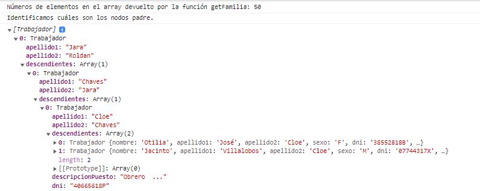
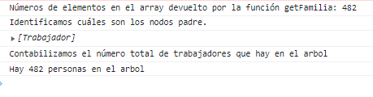

Crear árbol de datos apartir de un array de objetos.
Dentro del directorio './ejercicio/8/' encontrarás varios archivos, un 'index.html',
'persona.model.js', 'trabajador.model.js' y un 'solucion.js'.
Copia la clase Persona y Trabajador que tienes implementadas en ejercicios anteriores en los archivos correspondientes a este ejercicio.
- familiaApiCall.js: en el index.html se importa este archivo que contiene una función que te devolverá un array con los datos de los trabajadores pertenecientes a una familia. No debes modificar este archivo.
Apartado 1:
La función getFamilia(annoNacimientoPrimeraPersona) que está dentro de familiaApiCall.js, te devolverá un array con los datos de los trabajadores pertenecientes a una familia de manera desordenada.
Ten en cuenta los siguientes puntos:
- La función espera como parámetro el año de nacimiento de la primera persona del árbol genealógico, puedes invocarla por ejemplo con el año 1800.
- La familia se genera de forma aleatoria, esto quiere decir que el número de descendientes se calcula de forma aleatoria, pudiendo tener desde 0 descendientes hasta 4. Por lo que en ocasiones la función te devolverá los datos de un único familiar.
- Los datos se devuelven desordenados. El primer elemento no tiene porque ser el de la primera persona creada.
- La relación entre los datos de una persona y otra es el dniProgenitor1, con este dato podrás identificar quien es hijo de quién.
En este apartado deberás realizar los siguientes puntos:
- Añade un atributo a la clase Persona que se llame "descendientes", representará un array de Personas o Trabajadores. Deberás tener en cuenta esta modificación para modificar la clase Trabajador si es necesario.
- Añade un método a la clase Persona "addDescendiente(persona)" que añada la persona pasada por parámetro al array de descendientes siempre y cuando el dniProgenitor1 o dniProgenitor2 sea igual al dni de la persona a la que se le quiere añadir dicho descendiente.
- Por cada elemento devuelto por la función getFamilia, deberás crear un objeto de tipo Trabajador y deberás crear un árbol que represente a la familia, asignando a cada Trabajador los descendientes que les corresponda.
- Finalmente deberás identificar quién o quienes son los nodos padre (1º trabajador generado) y deberás sacar por consola (console.log()) un array con los nodos padres y que se puedan ir desplegando a través de los descendientes tal y como se ve en la imagen.

Apartado 2:
En este apartado queremos que practiques con las funciones recursivas, concretamente una vez generado el árbol del apartado anterior queremos que utilices una función recursiva para recorrer el árbol y contar el número de personas que hay en el mismo y así
comprobar que el número total coincide con el de personas generadas por la función. Mas información sobre recursión en el siguiente enlace.
Deberás mostrar dicha información por consola tal y como se muestra en la imagen.
